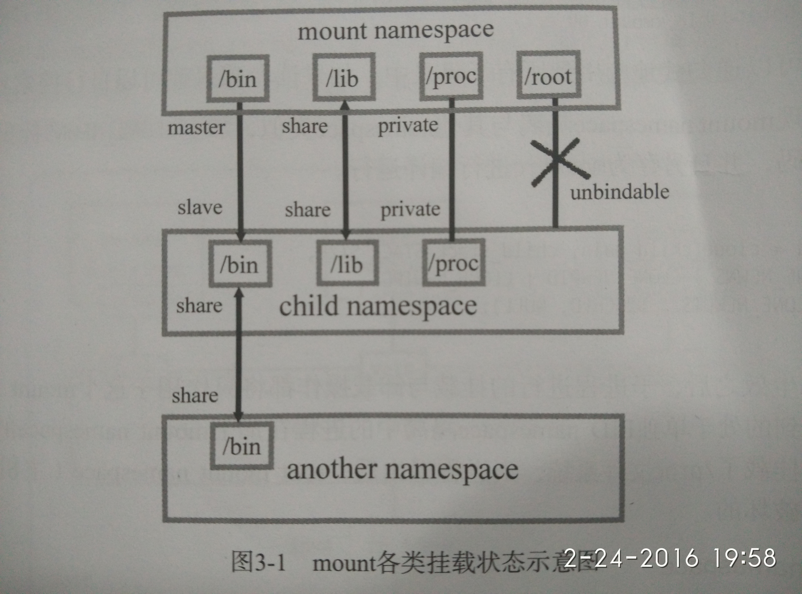
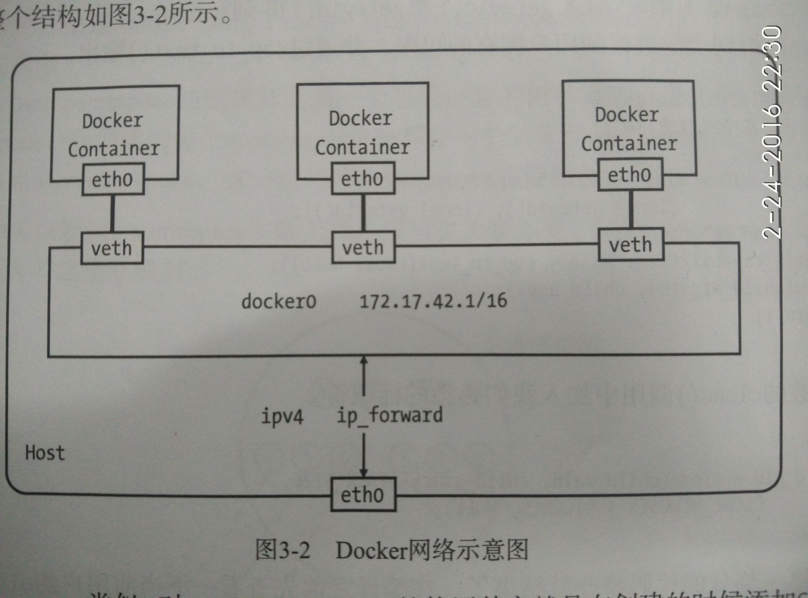

docker
Table of Contents
1 The Docker user guide
1.1 目的
- docker中运行你的应用程序
- 运行你自己的容器
- 创建docker镜像
- 分享docker镜像
1.3 Docker 应用"Hello world"
1.3.1 在容器中输出hello world
sudo docker run centos:6 echo 'hello world' hello world
- 命令解释
- docker run 组合会运行容器
- centos:6 指定镜像版本（如果本地没有找到镜像，则从docker.com查找
- 容器中执行的命令
1.3.2 交互式的容器
sudo docker run -t -i centos:6 /bin/bash root@af8bae53bdd3:/#
- 选项解释：
-t 表示在新容器内指定一个伪终端或终端
-i 表示允许对容器内的(STDIN)进行交互
1.3.3 容器成为守护进程
- 启动进程
sudo docker run -d centos:6 bash -c "while true; do echo hello world; done" 1e5535038e285177d5214659a068137486f96ee5c2e85a4ac52dc83f2ebe4147(容器ID（Container ID)
- 容器进程查看
sudo docker ps CONTAINER ID IMAGE COMMAND CREATED STATUS PORTS NAMES 7d045853d31b centos:6 "bash -c 'while true;" 7 minutes ago Up 7 minutes furious_wozniak
- 查看容器内应用的输出
sudo docker logs furious_wozniak
- 关闭容器
sudo docker stop furious_wozniak
1.4 Docker 运行实例
1.4.1 启动一个实例
sudo docker run -d -P training/webapp python app.py
-P 选项通知 Docker 将容器内部使用的网络端口映射到我们使用的主机上
本例中指定了training/web 镜像。这个镜像已经包含了简单的Flask web 应用
1.4.2 查看状态
$ sudo docker ps -l # 多出一个 0.0.0.0:32768->5000/tcp # 5000端口是镜像预定义的端口 # 可以在构建容器时指定默认端口
1.4.3 监听在其他端口
sudo docker run -d -p 5000:5000 training/webapp python app.py
1.4.4 查看网络端口快捷方式
$ sudo docker port xxxxxxxxxx 5000
1.4.5 查看WEB应用日志
$ sudo docker logs -f nostalgic_morse * Running on http://0.0.0.0:5000/ 10.0.2.2 - - [23/May/2014 20:16:31] "GET / HTTP/1.1" 200 - 10.0.2.2 - - [23/May/2014 20:16:31] "GET /favicon.ico HTTP/1.1" 404 -
1.4.6 查看WEB应用的进程
$ sudo docker top xxxxxx_xxx
1.4.7 查看docker容器的配置和状态信息
$ sudo docker inspect xxxxxxx_xxx
sudo docker inspect -f '{{ .NetworkSettings.IPAddress }}' nostalgic_morse
1.4.8 重启WEB应用容器
$ sudo docker restart xxxxxx_xxx
1.4.9 删除容器
$ sudo docker rm xxxxxx_xxxx
注意：不能删除正在运行中的容器，必须先stop
1.5 Docker 镜像
1.5.1 公共镜像
1.5.2 自定义镜像
- 更新并且提交更改
$ sudo docker run -t -i training/sinatra /bin/bash root@0b2616b0e5a8:/# 注意：已创建容器ID 0b2616b0e5a8，需要指定这个ID来提交新的更改
修改之后提交
$ sudo docker commit -m="Added json gem" -a="Kate Smith" 0b2616b0e5a8 ouruser/sinatra:v2 4f177bd27a9ff0f6dc2a830403925b5360bfe0b93d476f7fc3231110e7f71b1c
-m 参数来指定提交信息
-a 参数来指定提交人
- 使用 Dockerfile 构建镜像
- 准备路径
$ cd /tmp $ mkdir sinatra $ cd sinatra $ touch Dockerfile
- 编写配置
在Dockerfile添加如下内容
# This is a comment FROM fedora MAINTAINER CJ <zhangyafeng097@emao.com> RUN dnf install emacs -y
- 执行打包（构建）
$ sudo docker build -t lala/sinatra:v5 /tmp/sinatra
- 注意
与存储程序驱动无关，镜像不能超过127层。这是一种全局设置，为了是从整体上来优化镜像的大小。
- Dockerfile资料 https://docs.docker.com/userguide/level1/
- 准备路径
1.5.3 镜像标签(tag)
- 添加标签
$ docker tag 5db5f8471261 ouruser/sinatra:devel docker tag 需要使用镜像ID，这里是 5db5f8471261，用户名、镜像源和新的标签名。
- 查看某镜像的标签
$ docker images ouruser/sinatra REPOSITORY TAG IMAGE ID CREATED VIRTUAL SIZE ouruser/sinatra latest 5db5f8471261 11 hours ago 446.7 MB ouruser/sinatra devel 5db5f8471261 11 hours ago 446.7 MB ouruser/sinatra v2 5db5f8471261 11 hours ago 446.7 MB
1.6 Docker 连接容器
1.6.1 端口映射
- 指定udp映射
$ sudo docker run -d -p 127.0.0.1:5000:5000/udp training/webapp python app.py
1.6.2 容器连接
- 概念
端口映射并不是唯一把docker连接到另一个容器的方法。docker有一个连接系统允许将多个容器连接在一起， 共享连接信息。docker连接会创建一个父子关系，其中父容器可以看到子容器的信息。
- 容器命名
$ sudo docker run -d -P --name web training/webapp python app.py
- 获取容器名字
$ sudo docker inspect -f "{{ .Name }}" aed84ee21bde /web - 容器连接
连接允许容器之间可见并且安全地进行通信。使用–link创建连接。我们创建一个新容器，这个容器是数据库。
- 创建一个db容器
$ sudo docker run -d --name db training/postgres
- 创建一个web容器连接db容器
$ sudo docker run -d -P --name web --link db:db training/webapp python app.py # --link name:alias
- 创建一个db容器
2 原理（实现方式）—— namespace
2.1 目的
了解docker的实现机制会有助于用更合适的方式来使用docker
2.2 资源隔离标志位(20多种CLONE*)
| namespace | 系统调用参数 | 隔离内容 |
|---|---|---|
| UTS | CLONENEWUTS | 主机名与域名 |
| IPC | CLONENEWIPC | 信号量、消息队列和共享内存 |
| PID | CLONENEWPID | 进程编号 |
| Network | CLONENEWNET | 网络设备、网络栈、端口 |
| Mount | CLONENEWNS | 挂载点 |
| User | CLONENEWUSER | 用户和用户组 |
2.3 /proc/[pid]/ns 目录
从3.8内核开始，可以在该目录下看到指向不同namespace号的文件如：
[cj @ office 12:39 ~]$ ls -l /proc/$$/ns 总用量 0 lrwxrwxrwx 1 cj cj 0 2月 23 12:39 ipc -> ipc:[4026531839] lrwxrwxrwx 1 cj cj 0 2月 23 12:39 mnt -> mnt:[4026531840] lrwxrwxrwx 1 cj cj 0 2月 23 12:39 net -> net:[4026531957] lrwxrwxrwx 1 cj cj 0 2月 23 12:39 pid -> pid:[4026531836] lrwxrwxrwx 1 cj cj 0 2月 23 12:39 user -> user:[4026531837] lrwxrwxrwx 1 cj cj 0 2月 23 12:39 uts -> uts:[4026531838]
2.4 namespace的四种API
2.4.1 clone()
- 通过clone()在创建新进程的同时创建namespace
int clone(int (*child_func)(void *), void *child_stack, int flags, void *arg); // child_func 传入子进程运行的程序主函数 // child_stack 传入子进程使用的栈空间 // flags 表示使用哪些CLONE_*标志位，与namespace相关的已列在上表中 // args 用于传入用户参数
2.4.2 setns() 加入一个已经存在的namespace
在 Docker 中，使用 docker exec 在已经运行着的容器中执行一个新的命令，就需要用到该方法。
int setns(int fd, int nstype); // 参数 fd 表示要加入 namespace 的文件描述符。它是一个指向 /proc/[pid]/ns 目录的文件喵舒服。 // 参数 nstype 让调用者可以检查mespace类型是否符合实际要求。参数为 0 时 不检查。
示例：
touch ~/uts mount --bind /proc/27514/ns/utf ~/uts
fd = open(argv[1], O_RDONLY); setns(fd, 0); execvp(argv[2], &argv[2]);
2.4.3 unshare()
同 clone()，但运行在原先的进程上，不需要启动一个新进程。(在Docker中并没有使用这个接口）
int unshare(int flags);
2.4.4 fork()
就这么点事儿，fork后看返回值来确定自己是否是子进程，然后做不同的操作 - -|||
2.5 Docker 相关的资源隔离标志位
2.5.1 UTS(UNIX Time-sharing System) namespace
提供了主机名和域名的隔离，这样才能在网络上被当作一个独立的节点，而非宿主机上的一个进程。 在Docker中，每个镜像基本都以自身提供的服务名称来命名镜像的hostname，且不会对宿主机产生任何影响，原理就是利用UTS namespace
#define _GNU_SOURCE
#include <sys/types.h>
#include <sys/wait.h>
#include <stdio.h>
#include <sched.h>
#include <signal.h>
#include <unistd.h>
#define STACK_SIZE (1024 * 1024)
static char child_stack[STACK_SIZE];
char * const child_args[] = {
"/bin/bash",
NULL,
};
int child_main(void *args)
{
printf("在子进程中!\n");
sethostname("NewNamespace", 12);
execv(child_args[0], child_args);
return 1;
}
int main()
{
printf("程序开始：\n");
int child_pid = clone(child_main, child_stack + STACK_SIZE,
CLONE_NEWUTS | SIGCHLD, NULL);
if (0 > child_pid)
perror("不知到为什么错了");
waitpid(child_pid, NULL, 0);
puts("已退出");
return 0;
}
2.5.2 IPC(Inter-Process Communication) namespace
进程间通信涉及的IPC资源包括常见的信号量、消息队列和共享内存。 申请IPC资源就申请了一个全局唯一的32位ID，所以IPC namespace中实际上包含了系统IPC标识符以及实现POSIX消息队列的文件系统。 在同一个IPC namespace下的进程彼此可见，不同IPC namespace下的进程则互相不可见。
$ ipcmk -Q # 创建一个message queue $ ipcs -q # 查看已经开启的 message queue
#define _GNU_SOURCE
#include <sys/types.h>
#include <sys/wait.h>
#include <stdio.h>
#include <sched.h>
#include <signal.h>
#include <unistd.h>
#define STACK_SIZE (1024 * 1024)
static char child_stack[STACK_SIZE];
char * const child_args[] = {
"/bin/bash",
NULL,
};
int child_main(void *args)
{
printf("在子进程中!\n");
sethostname("NewNamespace", 12);
execv(child_args[0], child_args);
return 1;
}
int main()
{
printf("程序开始：\n");
int child_pid = clone(child_main, child_stack + STACK_SIZE,
CLONE_NEWIPC | SIGCHLD | CLONE_NEWUTS, NULL);
if (0 > child_pid)
perror("不知到为什么错了");
waitpid(child_pid, NULL, 0);
puts("已退出");
return 0;
}
$ ipcs -q # 查看已经开启的消息队列时已经看不到刚才创建的了, 实现了IPC的隔离。
2.5.3 PID(Process ID) namespace
隔离PID
- 每个PID namespace中的第一个进程“PID 1”，都会像传统Linux中的init进程一样拥有特权，起特殊作用。
- 一个namespace中的进程，不可能通过kill或ptrace影响父节点或者兄弟节点中的进程，因为其它节点的PID在这个namespace中没有任何意义
- 如果在新的PID namespace中重新挂载/proc文件系统，会发现其下只显示同一个PID namespace中的其它进程。
- 在root namespace中可以看到所有进程，并且递归包含所有子节点中的进程。
扩展： 外部监控Docker中运行的程序，监控Dockerdaemon所在的PID namespace下的所有进程机器子进程，如有需要，可以筛选检查。
将上例中的代码修改如下：
// [...] int child_pid = clone(child_main, child_stack + STAK_SIZE, CLONE_NEWPID | CLONE_NEWIPC | CLONE_NEWUTS, | SIGHLD, NULL); // [...]
[cj @ office 17:08 ~/tmp]$ sudo ./a.out 程序开始： 在子进程中! [root @ NewNamespace 17:08 /home/cj/tmp]$ echo $$ 1 [root @ NewNamespace 17:08 /home/cj/tmp]$ ps aux | grep a.out root 16032 0.0 0.0 233532 7336 pts/0 S 17:08 0:00 sudo ./a.out root 16033 0.0 0.0 5192 788 pts/0 S 17:08 0:00 ./a.out root 16213 0.0 0.0 114344 2352 pts/0 S+ 17:08 0:00 grep --color=auto a.out [root @ NewNamespace 17:08 /home/cj/tmp]$ exit 已退出 [cj @ office 17:08 ~/tmp]$ echo $$ 13636 [cj @ office 17:08 ~/tmp]$
但是，由于尚未对文件系统挂载点隔离，所以/proc目录还是可以读取到当前宿主机的所有进程状态
- PID namespace 中的 init 进程
- 容器中需要一个类似宿主机的 init 进程来维护容器中的进程表
- 如果确实需要在一个Docker容器中运行多个进程，最先启动的命令进程应该是具有资源监控与回收等管理能力的，如 bash。
- 信号与 init 进程
- init 进程的特权 —— 信号屏蔽 如果 init 中没有编写处理某个信号的代码逻辑，那么与 init 在同一个 PID namespace 下的进程（即使有超级权限） 发送给 init 的信号都会被屏蔽。（主要作用是防止 init 进程被误杀）
- 父节点发送给子节点的 SIGKILL 和 SIGSTOP，子节点的 init 会强制执行。(父节点可以终止子节点的进程）
- init 被销毁后，同一 namespace(PID) 中的其它进程也会接收到 SIGKILL。 理论上，该 PID namespace 将不存在，除非 /proc/[pid]/ns/pid 处于被挂载或者打开的状态，namespace就会 保留，但是也不能执行 setns() 、fork()，所以实际上也没有用了。
- 挂载 proc 文件系统
如果需要只能看到 PID namespace 本身应该看到的进程，需要重新挂载 /proc：
[cj @ office 18:08 ~/tmp]$ sudo ./a.out 程序开始： 在子进程中! [root @ NewNamespace 18:08 /home/cj/tmp]$ mount -t proc proc /proc [root @ NewNamespace 18:08 /home/cj/tmp]$ ps auxf USER PID %CPU %MEM VSZ RSS TTY STAT START TIME COMMAND root 1 0.3 0.0 118372 4872 pts/0 S 18:08 0:00 /bin/bash root 44 0.0 0.0 153184 3952 pts/0 R+ 18:08 0:00 ps auxf [root @ NewNamespace 18:08 /home/cj/tmp]$ umount /proc [root @ NewNamespace 18:08 /home/cj/tmp]$ exit
- unshare() 和 setns()
创建其它 namespace 时这两个调用都会直接进入新的namespace，PID namespace则不会
一旦程序进程创建之后，它的 PID namespace 的关系就确定下来了，进程不会变更它们对应的 PID namespace。 在Docker中，docker exec 会使用setns()函数加入已经存在的命名空间，但是最终还是会调用clone()函数。
2.5.4 (NS namespace)mount namespace
- 历史上第一个Linux namespace
- 通过隔离文件系统挂载点对隔离文件系统提供支持
- 标识符： CLONENEWNS
- 06年引入的挂载传播
- 共享关系(share relationship) 如果两个挂载对象具有共享关系，那么一个挂载对象中的挂载事件会传播到另一个挂载对象，反之亦然。
- 从属关系(slave relationship) 如果两个挂载对象形成从属关系，那么一个挂载对象中的挂载事件会传播到另一个挂载对象，反之不行； 在这种关系中，从属对象是事件的接受者。
- 一个挂载状态可能为以下一种：
- 共享挂载(shared) 传播事件的挂载对象称为共享挂载
- 从属挂载(slave) 接收传播事件的挂载对象称为从属挂载
- 共享／从属挂载(shared and slave) 同时兼有前述两者特征的挂载对象称为 共享/从属挂载
- 私有挂载(private) 既不传播也不接收传播事件的挂载对象称为私有挂载
- 不可绑定挂载(unbindable) 与私有挂载相似，但是不允许执行绑定挂载，即创建 mount namespace 时这块文件对象不可被复制。
 上图中，
最上层的 mount namespace 下的 /bin 目录与 child namespace 通过 master slave 方式 进行挂载传播，当 mount namespace 中的 /bin 目录发生变化时，发生的挂载事件能够自动传播 到 child namespace 中
/lib 目录使用完全的共享挂载传播，各 namespace 之间发生的变化都会互相影响
/proc 目录使用私有挂载传播的方式，各 mount namespace 之间互相隔离
最后的 /root 目录一半都是管理员所有，不能让其它 mount namespace 挂载绑定
- 挂载属性命令, 默认情况下，所有挂载状态都是私有的，
- 设置为共享挂载的命令如下
$ mount --make-shared <mount-object>
- 从属挂载
$ mount --make-slave <shared-mount-object>
- 共享／从属挂载
$ mount --make-shared <slave-mount-object>
- 私有挂载
$ mount --make-private <mount-object>
- 不可绑定的挂载
$ make --make-unbindable <mount-object>
- 设置为共享挂载的命令如下
- 示例
// [...] int child_pid = clone(child_main, child_stack + STACK_SIZE, CLONE_NEWNS | CLONE_NEWPID | CLONE_NEWIPC, CLONE_NEWUTS | SIGCHLD, NULL); // [...]
[cj @ office 21:56 ~/tmp]$ sudo mount --make-private /proc [cj @ office 21:56 ~/tmp]$ sudo ./a.out 程序开始： 在子进程中! [root @ NewNamespace 21:57 /home/cj/tmp]$ mount --make-private -t proc proc /proc [root @ NewNamespace 21:57 /home/cj/tmp]$ ps auxf USER PID %CPU %MEM VSZ RSS TTY STAT START TIME COMMAND root 1 0.3 0.0 118372 4836 pts/0 S 21:57 0:00 /bin/bash root 44 0.0 0.0 153184 3740 pts/0 R+ 21:57 0:00 ps auxf [root @ NewNamespace 21:57 /home/cj/tmp]$ exit 已退出 [cj @ office 21:57 ~/tmp]$ ps aux | wc -l 184 [cj @ office 21:57 ~/tmp]$
2.5.5 network namespace 概述
- 一个物理的网络设备最多存在于一个network namespace中，可以通过创建veth pair(虚拟网络设备对: 有两端，类似管道，如果数据从一端传入另一端也能接收到，反之亦然)在不同 network namespace 间创建通道， 以达到通信目的。
- 在建立起 veth pair 之前，假设容器初始化的进程称为 init。Docker daemon 在宿主机上负责创建这个
veth pair，把另一端绑定到 docker0 网桥上，另一端介入新建的 network namespace 进程中。这个过程
执行期间，Docker daemon 和 init 就通过 pipe 进行通信。具体来说，就是在 Docker daemon 完成
veth pair 的创建之前，init在管道的另一端循环等待，知道管道另一端传来 Docker daemon 关于 veth
设备的信息，并关闭管道。init 才结束等待的过程，并把它的 "eth0" 启动起来。如图：

2.5.6 user namespaces
- 隔离用户: 在宿主机上以普通用户创建的容器中，该用户可以拥有最高权限。
- 目前6个 namespace 中最后一个支持的，3.8内核时还尚未实现所有功能。(尚不成熟)
- 示例：
#define _GNU_SOURCE #include <sys/types.h> #include <sys/wait.h> #include <stdio.h> #include <sched.h> #include <signal.h> #include <unistd.h> #include <sys/capability.h> #define STACK_SIZE (1024 * 1024) extern cap_t cap_get_proc(void); static char child_stack[STACK_SIZE]; char * const child_args[] = { "/bin/bash", NULL, }; int child_main(void *args) { printf("在子进程中!\n"); cap_t caps; printf("eUID = %ld; eGID = %ld; ", (long)geteuid(), (long)getegid()); caps = cap_get_proc(); printf("capabilities: %s\n", cap_to_text(caps, NULL)); execv(child_args[0], child_args); return 1; } int main(void) { printf("程序开始：\n"); int child_pid = clone(child_main, child_stack + STACK_SIZE, CLONE_NEWIPC | CLONE_NEWUTS | SIGCHLD | CLONE_NEWPID | CLONE_NEWNS | CLONE_NEWUSER, NULL); if (0 > child_pid) perror("不知到为什么错了"); waitpid(child_pid, NULL, 0); puts("已退出"); return 0; }[cj @ office 22:59 ~/tmp]$ id uid=1000(cj) gid=1000(cj) 组=1000(cj),10(wheel) [cj @ office 22:59 ~/tmp]$ ./a.out 程序开始： 在子进程中! eUID = 65534; eGID = 65534; capabilities: = cap_chown,cap_dac_override,[...]37+ep # 这时拥有了对整个文件系统做任何修改的权限 AC available [nfsnobody @ office 22:59 ~/tmp]$ id uid=65534(nfsnobody) gid=65534(nfsnobody) 组=65534(nfsnobody) [nfsnobody @ office 23:00 ~/tmp]$
- 通过上述示例得出：
- user namespace 创建后，第一个进程被赋予了该 namespace 中的全部权限， 这样该 init 进程就可以完成所有必要的初始化工作。
- 从 namespace 内部观察到的 UID 和 GID 已经与外部不同了，默认显示为65534，表示尚未 与外部 namespace 用户映射。所以 需要对 user namespace 内部的这个初始 user 和它外部 namespace 的某个用户建立映射。 这样在操作外部 namespace 时，系统可以检验权限。
- 新用户在新 namespace 中有全部权限，外部 namespace 用户则没有任何权限。
[nfsnobody @ office 23:10 ~/tmp]$ ll 总用量 28 ---------- 1 nfsnobody nfsnobody 10536 2月 24 22:59 a.out -rw-rw-r-- 1 nfsnobody nfsnobody 313 2月 22 15:07 monitor_db_m.sh drwxrwxr-x 2 nfsnobody nfsnobody 4096 2月 18 17:12 sinatra/ -rwxr--r-- 1 nfsnobody nfsnobody 964 2月 24 22:59 uts.c* -rwxr--r-- 1 nfsnobody nfsnobody 744 2月 24 21:43 uts.c~* [nfsnobody @ office 23:10 /tmp]$ exit 已退出 [cj @ office 23:17 ~/tmp]$ ll 总用量 28 ---------- 1 cj cj 10536 2月 24 22:59 a.out -rw-rw-r-- 1 cj cj 313 2月 22 15:07 monitor_db_m.sh drwxrwxr-x 2 cj cj 4096 2月 18 17:12 sinatra/ -rwxr--r-- 1 cj cj 964 2月 24 22:59 uts.c* -rwxr--r-- 1 cj cj 744 2月 24 21:43 uts.c~*
3 Docker 常用选项
| 选项 | 作用 |
|---|---|
| -i | 交互模式，始终保持输入流开放 |
| -t | 分配一个伪终端 |
| –name | 启动时指定容器的名字 |
| -c | 给运行在容器中的所有进程分配CPU的shares值 |
| -m | 用于限制为容器中所有进程 |
| -v | 用于挂载一个Volume，可以用多个-v参数同时挂载多个，格式：[host-dir]:[container-dir]:[rw/ro] |
| -p | 用于将容器的端口映射到宿主机的端口，常用格式：hostPort:containerport |
| run | 新建一个容器 |
| start/stop/restart | 操作一个已存在的容器 |
| rmi/rm | rmi 用于删除镜像，rm用来删除容器 |
| attach | 连接到一个正在运行的容器 |
| inspect | 查看镜像和容器的详细信息，默认列出所有信息，–format 参数用来指定输出的模板格式：docker inspect –format='{{.NetworkSettings.IPAddress}}' ee36 |
| events、history和logs命令 | 用于查看Docker的系统日志信息。events 打印实时的系统事件; history打印出指定镜像的历史版本信息，即构建该镜像的每一层镜像的命令记录; logs 打印容器中进程的运行日志 |